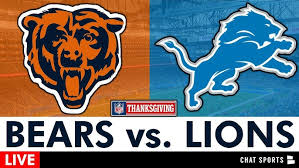

Football News
Detroit Lions vs. Chicago Bears:
The Lions earned a thrilling 23-20 victory. Jameson Williams pulled off a stunning hurdle during a critical drive, while Jared Goff threw two touchdown passes. The Bears mounted a late comeback but fell short.
Green Bay Packers vs. Miami Dolphins:
The Dolphins struggled in the cold conditions, continuing their streak of losses in games below 40°F. Despite a late push by Miami, which included a touchdown by De’Von Achane and a two-point conversion, the Packers' balanced offense and defensive stops sealed the game
Dallas Cowboys vs. New York Giants:
The Cowboys secured a 27-20 win, highlighted by DeMarvion Overshown’s interception return for a touchdown and Rico Dowdle’s 112-yard rushing performance. The Giants’ struggles continued despite Drew Lock’s late rally